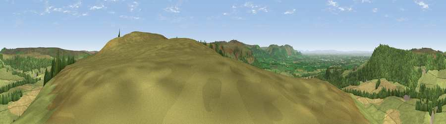

Viewpoint near Kildale
#4928 in England · top 19% of its area beats it · near Kildale · open accessWhere it is
The exact computed spot (NZ 60900 08662). Click the marker for map links.
Public access: this spot lies on mapped open-access land (CRoW Act 2000) — you may roam here on foot. Computed from Natural England's CRoW access layer and OpenStreetMap rights of way — not the legal definitive map. Always verify locally.
The view, rendered

A 360° render of this exact spot computed from the terrain model, tree cover and land cover — summer colours, afternoon light, calibrated against photographs of famous viewpoints. Real trees, hedges and buildings will differ in detail.
The panorama
Grey silhouette: terrain skyline in each direction (720 bearings, Earth curvature and refraction included). Dashed green: skyline with trees (+15 m) and buildings (+8 m) as obstacles. Blue strip: how far the ground is visible on each bearing.
Where the view opens
Wedge length = distance to the farthest visible ground on that bearing (vegetation-aware). Rings at 10, 25 and 50 km.
What fills the view
60% grassland · 23% woodland · 17% cropland
Angular shares of the visible panorama (visual magnitude), not map area. Landscape diversity 0.42 (0–1 Shannon).
Key numbers
More beautiful places nearby
The staircase of upgrades: each row has a higher view potential than everything closer. Driving times are estimates from straight-line distance, calibrated against real road routing — check an actual route before setting out.
| Place | Direction | Drive | Score |
|---|---|---|---|
| Easby Moor | NW · 2 km | ~5 min | 78.5 |
| Viewpoint near Hutton Village | NNW · 5 km | ~10 min | 83.0 |
| Roseberry Topping | NW · 5 km | ~11 min | 85.8 |
| Viewpoint near Lazenby | NNW · 10 km | ~20 min | 86.4 |
| Warsett Hill | NE · 15 km | ~27 min | 86.8 |
| Viewpoint near Easington | NE · 17 km | ~30 min | 90.2 |
| The Knoll | SSW · 434 km | ~408 min | 91.0 |
54.46969, -1.06185 · source: screening · position refined by local search. Computed location — check access rights before visiting.